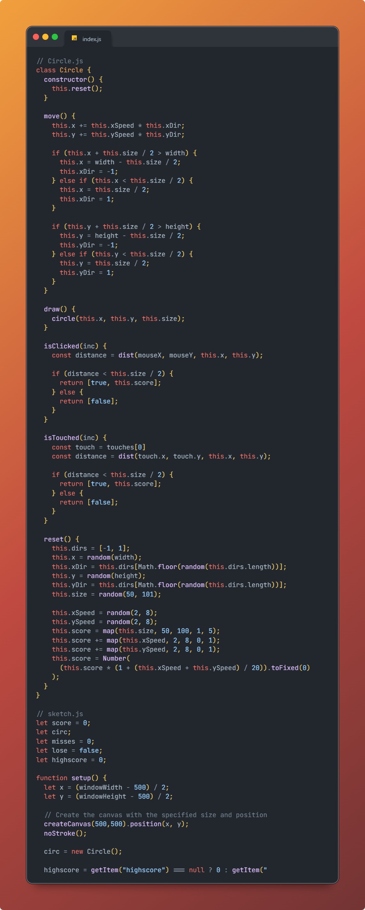
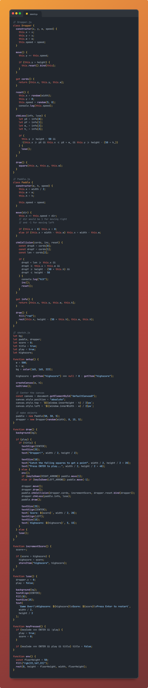

About Me
Hi - My name is Neel and I am currently a student at the Morris County School of Technology (MSCT) in the Computer Science Academy. In my free time, I like to play sports like Soccer and Badminton with my friends, play with my dog, watch movies and shows, play video games, and code. When I grow up, I aspire to be in a computer science related job. Specifically, I want to be either a Web Developer, since I really enjoy creating interactive websites, or a software developer because I think that creating software for different companies would be very interesting and fun. I am a great candidate for computer science roles because not only am I a great programmer and have great problem solving skills, I have led multiple coding projects for classes at my school, developing my leadership skills in the workplace. Also, my school focuses on teaching computer science skills to help us thrive in the industry and not just to pass tests. This means that I learned the communication skills, leadership, and problem solving skill needed by computer scientists.

Skills and Expertise
The below table has a comprehensive list of the relavent computer science technologies/skills that I am able to use to complete tasks. Evidently, there are a lot of different things in this list, showing that I can easily learn and become familiar with new technologies very quickly.
| Skill | Year Learned | Level |
|---|---|---|
| Python | 2020 | Intermediate |
| Javascript | 2021 | Advanced |
| Typescript | 2022 | Advanced |
| React | 2021 | Beginner-Intermediate |
| CSS | 2021 | Intermediate |
| HTML | 2021 | Advanced |
| C++ | 2020 | Beginner |
| C# | 2021 | Beginner |
| Java | 2024 | Advanced |
| PC Building | 2020 | Beginner |
Education
-
2014-2020
Lakeview Elementary School
I went to elementary school at a school called Lakeview in my hometown Denville.
-
2020-2023
Valleyview Middle School
I went to middle school at a school called Vallyview in my hometown Denville.
-
2023-2026
Morris County School of Technology (Computer Science)
During my highscool years, I am going to my county's technical school to study computer science in a more specialized and focused.
-
2027
CCM for Senior Year of Highschool
During my senior year of highschool, I have will be going to school at the County College of Morris, allowing me to get college credits and learn more advanced concepts in core subjects as well as computer science subjects.
Projects
I have made many coding projects during my life, You can try the two examples are below and were made using p5js. You can also check out my School Github Page and my Personal Github Page
Whackamole
Play in Fullscreen
This is a game where a circle of a random size floats around the screen and the user has to attempt to click it using their mouse. Based on the size and speed, you get a certain amount of points. A smaller and faster circle would give more points than a big, slow circle. After three missed clicks, the game ends and it displays your score along with your devices highscore.
This project requires knowledge of Object Oriented Programming in order to work with classes for the circle and incorporating it into the overall project. It also requires knowledge of local storage in order to read and save your highscore.
Dropper
Play in Fullscreen
This is a simple dropper game where a square falls from the sky and the user uses the arrow keys to navigate a paddle to "catch" the square. One successful catch results in a point, and one miss causes the game to end and a loss for the player.
This project also requires extensive knowledge of Object Oriented Programming since there are 2 main classes involved (1 for the paddle and 1 for the dropper) and these have to be put together to work with the main game logic. This game is very heavy on collision logic and it was originally a challenge to make sure that even a slight touch between the paddle and dropper resulted in a point. Similarly to the Whackamole game, this also uses localstorage to save and load highscores.
Currency Converter
View in FullscreenCode Link
This was one of the most fun projects I made during my freshman year in highschool. It is a simple React webpage that uses an api from currencyapi.com and it allows the user to either type in a currency code or select a currency from a dropdown menu and type in the amount of USD to convert into that currency.
This project requires knowledge in many aspects of front end development. These include HTML, CSS, JavaScript, React, and API's as well.
Again, if you are interested in looking at any of my other public projects, take a look at my Github pages linked here: School Github Page and my Personal Github Page